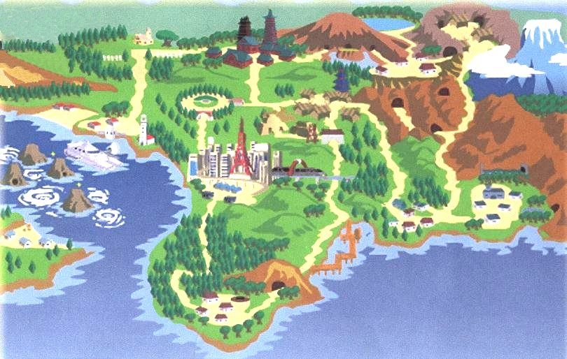
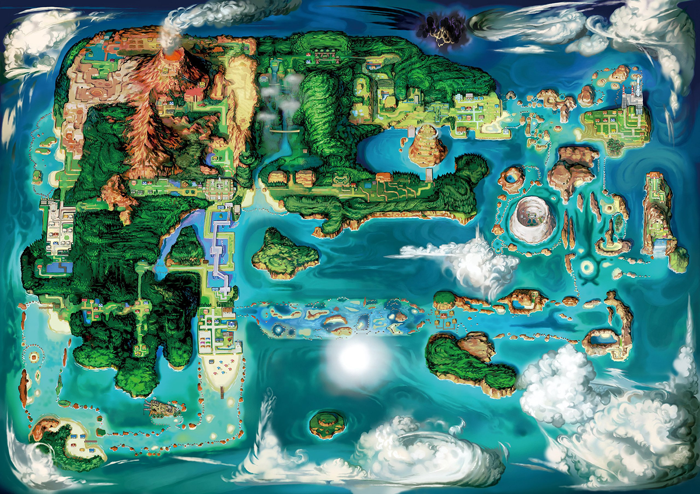
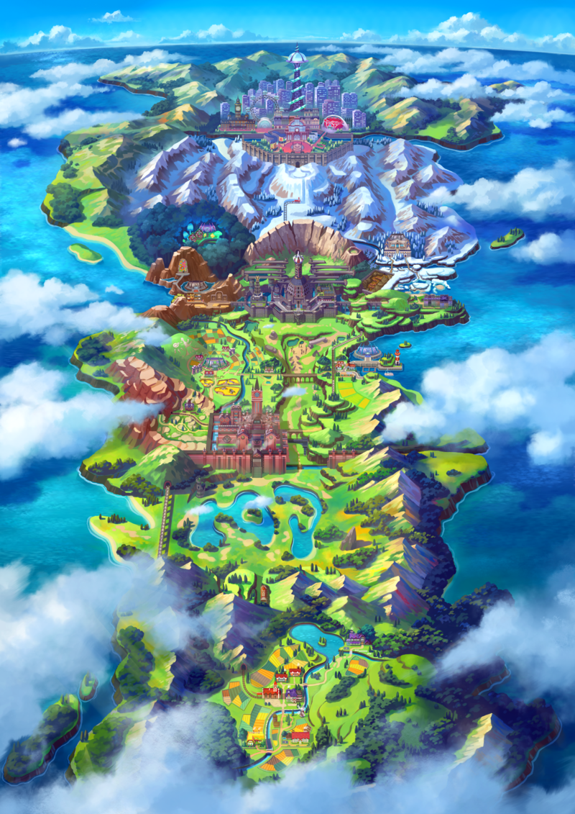

Regiones de Pokémon






Historia: Kanto es una de las regiones más antiguas y emblemáticas del mundo Pokémon. Aquí es donde comenzó la aventura de muchos entrenadores, siendo el hogar de lugares icónicos como el Monte Plateado y la Cueva Celeste. También fue el origen del equipo criminal conocido como el Equipo Rocket, liderado por Giovanni, quien además es el líder del último gimnasio de esta región.
Gimnasios: Brock (Roca), Misty (Agua), Lt. Surge (Eléctrico), Erika (Planta), Koga/Janine (Veneno), Sabrina (Psíquico), Blaine (Fuego), Giovanni (Tierra).
Alto Mando: Lorelei (Hielo), Bruno (Lucha), Agatha (Fantasma), Lance (Dragón).
Profesor: Profesor Oak.
Iniciales: Bulbasaur, Charmander, Squirtle.
Gimnasios: Brock (Roca), Misty (Agua), Lt. Surge (Eléctrico), Erika (Planta), Koga/Janine (Veneno), Sabrina (Psíquico), Blaine (Fuego), Giovanni (Tierra).
Alto Mando: Lorelei (Hielo), Bruno (Lucha), Agatha (Fantasma), Lance (Dragón).
Profesor: Profesor Oak.
Iniciales: Bulbasaur, Charmander, Squirtle.
Historia: Johto es conocida por su profunda conexión con las antiguas leyendas de los Pokémon. Es el hogar de las Torres Campana y Latón, donde se cuenta la leyenda de Ho-Oh y los Pokémon legendarios que revivió tras un gran incendio. También es el escenario de la historia del Equipo Rocket, que intenta revivir su gloria tras su derrota en Kanto.
Gimnasios: Falkner (Volador), Bugsy (Bicho), Whitney (Normal), Morty (Fantasma), Chuck (Lucha), Jasmine (Acero), Pryce (Hielo), Clair (Dragón).
Alto Mando: Will (Psíquico), Koga (Veneno), Bruno (Lucha), Karen (Siniestro).
Profesor: Profesor Elm.
Iniciales: Chikorita, Cyndaquil, Totodile.
Gimnasios: Falkner (Volador), Bugsy (Bicho), Whitney (Normal), Morty (Fantasma), Chuck (Lucha), Jasmine (Acero), Pryce (Hielo), Clair (Dragón).
Alto Mando: Will (Psíquico), Koga (Veneno), Bruno (Lucha), Karen (Siniestro).
Profesor: Profesor Elm.
Iniciales: Chikorita, Cyndaquil, Totodile.
Historia: Hoenn es una región tropical llena de contrastes geográficos, con áreas volcánicas y vastos océanos. En esta región, los conflictos entre el Equipo Magma y el Equipo Aqua desencadenan eventos cataclísmicos relacionados con los Pokémon legendarios Groudon y Kyogre, quienes pueden alterar el clima a gran escala.
Gimnasios: Roxanne (Roca), Brawly (Lucha), Wattson (Eléctrico), Flannery (Fuego), Norman (Normal), Winona (Volador), Tate & Liza (Psíquico), Wallace/Juan (Agua).
Alto Mando: Sidney (Siniestro), Phoebe (Fantasma), Glacia (Hielo), Drake (Dragón).
Profesor: Profesor Birch.
Iniciales: Treecko, Torchic, Mudkip.
Gimnasios: Roxanne (Roca), Brawly (Lucha), Wattson (Eléctrico), Flannery (Fuego), Norman (Normal), Winona (Volador), Tate & Liza (Psíquico), Wallace/Juan (Agua).
Alto Mando: Sidney (Siniestro), Phoebe (Fantasma), Glacia (Hielo), Drake (Dragón).
Profesor: Profesor Birch.
Iniciales: Treecko, Torchic, Mudkip.
Historia: Sinnoh es una región montañosa con profundas raíces en la mitología de los Pokémon. Aquí se originaron los Pokémon legendarios relacionados con el tiempo (Dialga), el espacio (Palkia) y el mundo distorsionado (Giratina). El Equipo Galaxia busca controlar estas poderosas criaturas para alterar el universo mismo.
Gimnasios: Roark (Roca), Gardenia (Planta), Maylene (Lucha), Crasher Wake (Agua), Fantina (Fantasma), Byron (Acero), Candice (Hielo), Volkner (Eléctrico).
Alto Mando: Aaron (Bicho), Bertha (Tierra), Flint (Fuego), Lucian (Psíquico).
Profesor: Profesor Rowan.
Iniciales: Turtwig, Chimchar, Piplup.
Gimnasios: Roark (Roca), Gardenia (Planta), Maylene (Lucha), Crasher Wake (Agua), Fantina (Fantasma), Byron (Acero), Candice (Hielo), Volkner (Eléctrico).
Alto Mando: Aaron (Bicho), Bertha (Tierra), Flint (Fuego), Lucian (Psíquico).
Profesor: Profesor Rowan.
Iniciales: Turtwig, Chimchar, Piplup.
Historia: Unova es una región inspirada en la ciudad de Nueva York y su entorno. Es el escenario de los planes del Equipo Plasma, que intenta liberar a los Pokémon de sus entrenadores bajo la dirección de N y el siniestro Ghetsis. Los Pokémon legendarios Reshiram y Zekrom son esenciales para la historia, representando ideales y verdades opuestas.
Gimnasios: Cilan/Chili/Cress (Planta/Fuego/Agua), Lenora (Normal), Burgh (Bicho), Elesa (Eléctrico), Clay (Tierra), Skyla (Volador), Brycen (Hielo), Drayden/Iris (Dragón).
Alto Mando: Shauntal (Fantasma), Grimsley (Siniestro), Caitlin (Psíquico), Marshall (Lucha).
Profesor: Profesor Juniper.
Iniciales: Snivy, Tepig, Oshawott.
Gimnasios: Cilan/Chili/Cress (Planta/Fuego/Agua), Lenora (Normal), Burgh (Bicho), Elesa (Eléctrico), Clay (Tierra), Skyla (Volador), Brycen (Hielo), Drayden/Iris (Dragón).
Alto Mando: Shauntal (Fantasma), Grimsley (Siniestro), Caitlin (Psíquico), Marshall (Lucha).
Profesor: Profesor Juniper.
Iniciales: Snivy, Tepig, Oshawott.
Historia: Kalos es una región inspirada en Francia y es famosa por su belleza y elegancia. La historia gira en torno a los conflictos creados por el Team Flare, que busca crear un mundo bello a cualquier costo, incluso sacrificando vidas. Aquí se encuentran los legendarios Xerneas y Yveltal, símbolos de la vida y la destrucción.
Gimnasios: Viola (Bicho), Grant (Roca), Korrina (Lucha), Ramos (Planta), Clemont (Eléctrico), Valerie (Hada), Olympia (Psíquico), Wulfric (Hielo).
Alto Mando: Malva (Fuego), Siebold (Agua), Wikstrom (Acero), Drasna (Dragón).
Profesor: Profesor Sycamore.
Iniciales: Chespin, Fennekin, Froakie.
Gimnasios: Viola (Bicho), Grant (Roca), Korrina (Lucha), Ramos (Planta), Clemont (Eléctrico), Valerie (Hada), Olympia (Psíquico), Wulfric (Hielo).
Alto Mando: Malva (Fuego), Siebold (Agua), Wikstrom (Acero), Drasna (Dragón).
Profesor: Profesor Sycamore.
Iniciales: Chespin, Fennekin, Froakie.
Historia: Alola es una región tropical compuesta por varias islas y se destaca por su conexión profunda con los Pokémon guardianes y los Ultraentes. En lugar de gimnasios, los entrenadores deben superar las pruebas de los capitanes y Kahunas. La historia también introduce la Fundación Æther, que juega un papel crucial en la apertura de portales hacia otras dimensiones.
Capitanes: Ilima (Normal), Lana (Agua), Kiawe (Fuego), Mallow (Planta), Sophocles (Eléctrico), Acerola (Fantasma).
Kahunas: Hala (Lucha), Olivia (Roca), Nanu (Siniestro), Hapu (Tierra).
Profesor: Profesor Kukui.
Iniciales: Rowlet, Litten, Popplio.
Capitanes: Ilima (Normal), Lana (Agua), Kiawe (Fuego), Mallow (Planta), Sophocles (Eléctrico), Acerola (Fantasma).
Kahunas: Hala (Lucha), Olivia (Roca), Nanu (Siniestro), Hapu (Tierra).
Profesor: Profesor Kukui.
Iniciales: Rowlet, Litten, Popplio.
Historia: Galar está inspirada en el Reino Unido y es conocida por sus combates de Gimnasio que se celebran en enormes estadios. La región tiene una fuerte conexión con los Pokémon Gigamax, que pueden aumentar de tamaño durante las batallas. En esta región, se desarrollan conspiraciones relacionadas con la energía Galar y el Pokémon legendario Eternatus.
Gimnasios: Milo (Planta), Nessa (Agua), Kabu (Fuego), Bea/Allister (Lucha/Fantasma), Opal (Hada), Gordie/Melony (Roca/Hielo), Piers (Siniestro), Raihan (Dragón).
Alto Mando: No existe un Alto Mando tradicional, pero los Líderes de Gimnasio participan en el Torneo de Campeones.
Profesor: Profesora Magnolia.
Iniciales: Grookey, Scorbunny, Sobble.
Gimnasios: Milo (Planta), Nessa (Agua), Kabu (Fuego), Bea/Allister (Lucha/Fantasma), Opal (Hada), Gordie/Melony (Roca/Hielo), Piers (Siniestro), Raihan (Dragón).
Alto Mando: No existe un Alto Mando tradicional, pero los Líderes de Gimnasio participan en el Torneo de Campeones.
Profesor: Profesora Magnolia.
Iniciales: Grookey, Scorbunny, Sobble.